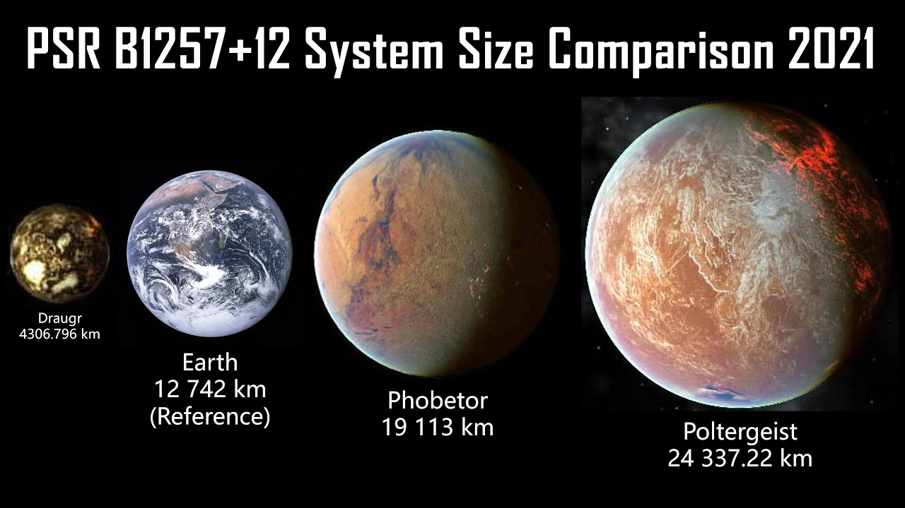

The first recorded theory of a possible exoplanet was in 1917. It wasnt until 1992 that it was officially discovered and acknowledged as an extraterrestrial planet.
(Two planets were discovered oribitng the same star.)
Planets Poltergeist and Phobetor compared to earth:
